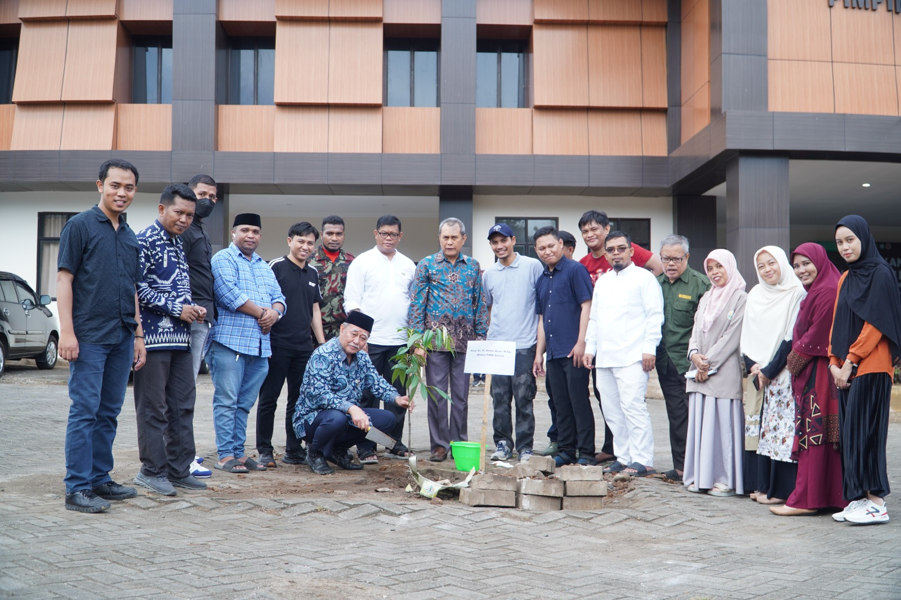
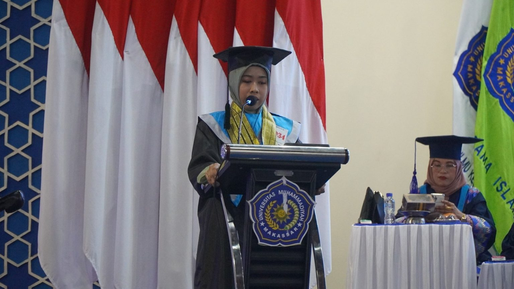

DAFTAR YUKK
UNIVERSITAS MUHAMMADIYAH MAKASSAR
Universitas Muhammadiyah Makassar didirikan pada tanggal 19 Juni 1963 sebagai cabang dari Universitas Muhammadiyah Jakarta. Pendirian Perguruan Tinggi ini adalah realisasi dari hasil Musyawarah Wilayah Muhammadiyah Sulawesi Selatan dan Tenggara ke-21 di Kabupaten Bantaeng.
Pendirian tersebut didukung oleh Persyarikatan Muhammadiyah sebagai organisasi yang bergerak dibidang pendidikan dan pengajaran dakwah amar ma’ruf nahi munkar, lewat surat nomor : E-6/098/1963 tertanggal 22 Jumadil Akhir 1394 H/12 Juli 1963 M. Kemudian akte pendiriannya dibuat oleh notaries R. Sinojo Wongsowidjojo berdasarkan akta notaries Nomor : 71 tanggal 19 Juni 1963. Universitas Muhammadiyah Makassar dinyatakan sebagai Perguruan Tinggi Swasta terdaftar sejak 1 Oktober 1965.
Universitas Muhammadiyah Makassar (Unismuh Makassar) sebagai Perguruan Tinggi Muhammadiyah (PTM) mengemban tugas dan peran yang sangat besar bagi agama, bangsa dan negara, baik di masa sekarang maupun di masa depan.
Selain posisinya sebagai salah satu PTM/PTS di Kawasan Timur Indonesia yang tergolong besar, juga padanya tertanam kultur pendidikan yang diwariskan sebagai amal usaha Muhammadiyah. Nama Muhammadiyah yang terintegrasi dengan nama makassar memberikan harapan terpadunya budaya, keilmuan dan nafas keagamaan.
Unismuh Perguruan Tinggi Muhammadiyah Pertama Yang Raih Akreditasi Unggul Dari BAN-PT Di Indonesia Timur
Kami dengan bangga mengumumkan bahwa Universitas Muhammadiyah (Unismuh) Makassar telah meraih prestasi luar biasa dengan mendapatkan Akreditasi Unggul dari Badan Akreditasi Nasional Perguruan Tinggi (BAN-PT). Unismuh tidak hanya meraih akreditasi nasional unggul tetapi juga mendapatkan pengakuan internasional dengan sertifikat ISO 21001:2018. Ini menegaskan komitmen kami terhadap peningkatan kualitas pendidikan tinggi secara global Bergabunglah dengan Kampus Pilihan 🎓 Dari 172 Perguruan Tinggi Muhammadiyah Aisyiyah (PTMA) se-Indonesia, Unismuh menjadi yang ke-9 yang meraih akreditasi Unggul dari BAN – PT. Menjadi PTMA pertama di Indonesia Timur yang meraih capaian tersebut, Unismuh adalah tempat untuk meraih impian dan mengejar keunggulan akademis. Sebagai langkah penting dalam perjalanan Unismuh, pencapaian ini bukan hanya untuk meningkatkan kualitas pendidikan tinggi di Indonesia, tetapi juga untuk mempersiapkan generasi muda yang berdaya saing tinggi di panggung global.
KAMU HARUS TAU INI!!
FAKULTAS
FAKULTAS AGAMA ISLAM
FAKULTAS KEDOKTERAN DAN ILMU KESEHATAN
FAKULTAS KEGURUAN DAN ILMU PENDIDIKAN
FAKULTAS EKONOMI DAN BISNIS
FAKULTAS TEKNIK
FAKULTAS ILMU SOSIAL DAN ILMU POLITIK
FAKULTAS PERTANIAN
PROGRAM PASCASARJANA


BERITA TERBARU MENGENAI KAMPUS KAMI
Unismuh Perguruan Tinggi Muhammadiyah Pertama Yang Raih Akreditasi Unggul Dari BAN-PT Di Indonesia Timur
UNISMUH.AC.ID, MAKASSAR – Program Studi S1 Ilmu Pemerintahan Fakultas Ilmu Sosial dan Ilmu Politik Universitas Muhammadiyah (Unismuh) Makassar berhasil meraih Akreditasi Unggul dari Badan Akreditasi Nasional Perguruan Tinggi (BAN-PT), menggantikan akreditasi A yang sebelumnya dipegang.
Keputusan ini dituangkan dalam 4572/SK/BAN-PT/Ak.KP/S/VI/2024 yang ditetapkan pada tanggal 4 Juni 2024. Predikat unggul diperoleh melalui mekanisme Instrumen Suplemen Konversi (ISK).
Informasi ini diumumkan oleh Wakil Rektor II Unismuh, Prof. Andi Sukri Syamsuri, yang membagikan tangkapan layar laman BAN-PT di Grup WhatsApp Unismuh Makassar, Selasa, 4 Juni 2024.
“Alhamdulillah, selamat Prodi S1 Ilmu Pemerintahan Unismuh raih akreditasi Unggul,” ungkap Prof. Andis, sapaan akrab Warek II Unismuh Makassar itu.
Proses Pencapaian
Saat dikonfirmasi, Ketua Prodi S1 Ilmu Pemerintahan Unismuh, Ahmad Harakan, M.H.I., menceritakan proses panjang yang mereka lalui dengan ISK Peringkat Akreditasi. “ISK diimplementasikan berdasarkan Permendikbud Nomor 5 Tahun 2020 dan Peraturan BAN-PT Nomor 1 Tahun 2020. Dasar inilah yang mendorong kami untuk melakukan konversi dari akreditasi A menjadi Unggul,” kata Ahmad Harakan.
ISK, lanjutnya, merupakan instrumen tambahan yang digunakan untuk konversi peringkat akreditasi yang diperoleh dengan Instrumen Akreditasi 7 Standar menjadi peringkat akreditasi baru sesuai dengan Instrumen Akreditasi 9 Kriteria.
Terdapat empat instrumen kunci dalam ISK, yaitu instrumen dosen, instrumen kurikulum, instrumen penjaminan mutu internal, dan instrumen sistem pelacakan lulusan, jelas Ahmad Harakan.
“Sekarang, Alhamdulillah, upaya kami telah membuahkan hasil sesuai harapan, yaitu Akreditasi Unggul. Tidak semua prodi yang melakukan pengusulan ISK dapat meraih pencapaian serupa,” ungkapnya. Faktor pendukung keberhasilan ini meliputi dukungan penuh dari semua stakeholder, baik di tingkat universitas maupun fakultas, serta dukungan dari tenaga teknis profesional. Namun, perjalanan ini tidak lepas dari kendala.
Selain itu, banyak pihak yang berperan aktif dalam pencapaian ini, termasuk tim penginputan data, pimpinan prodi, Badan Penjaminan Mutu di tingkat universitas, GKM Fakultas, dan seluruh dosen.
Siapkan Akreditasi Internasional
Ahmad Harakan menambahkan bahwa program studi ini sedang mempersiapkan diri untuk Akreditasi Internasional. Kesuksesan ikhtiar internasionalisasi program studi telah dirintis sejak tahun 2016 melalui berbagai kegiatan seperti International Conference, Visiting Professor, Student Exchange, ISO 21001:2018, penerbitan Otoritas: Jurnal Ilmu Pemerintahan terindeks Web of Science, KKN Internasional, pembukaan kelas internasional hingga kegiatan prestisius lainnya.
“Ikut terlibat dalam Hibah PRELAB bersama University of Latvia, Dublin City University, Irlandia, dan lain-lain juga merupakan bagian dari upaya internasionalisasi ini,” tambah Ahmad Harakan.
Apresiasi Pimpinan
Dekan FISIP Unismuh, Dr. Ihyani Malik, memberikan komentarnya dengan sebuah pantun:
“Pergi ke toko membeli bahan Singgah sebentar di tepi tanggul Selamat prodi ilmu pemerintahan Telah mencapai akreditasi unggul”
Ia melanjutkan dengan mengatakan, “Alhamdulillah, pencapaian yang luar biasa. Termasuk akreditasi yang lama kami tunggu-tunggu. Menjadi prodi ke-2 yang unggul dari 3 prodi di FISIP. Ini tidak lepas dari kerja keras tim dan dukungan dari semua pihak, mulai dari rektorat, BPM, hingga ke prodi.”
“Kami cukup deg-degan menunggu hasil ini karena cukup lama jedanya setelah dikirim baru keluar hasilnya. Tapi Alhamdulillah, kerja keras membuahkan hasil yang manis. Hasilnya unggul. Hasil ini bukan pencapaian prodi Ilmu Pemerintahan semata, tapi adalah kesuksesan kita bersama,” kata Ihyani.
Apresiasi turut disampaikan Rektor Unismuh Makassar Prof Ambo Asse.
“Alhamdulillah, Prodi Ilmu Pemerintahan menjadi Unggul. Terima kasih kepada Pimpinan Fakultas, Pimpinan Prodi bersama dosen dan Karyawan, yang secara sungguh- sungguh berusaha untuk mewujudkan akreditasi Unggul tersebut, barakallahu fikum,” ungkap Nakhoda Unismuh itu.
“Alhamdulillah, Prodi Ilmu Pemerintahan menjadi Unggul. Terima kasih kepada Pimpinan Fakultas, Pimpinan Prodi bersama dosen dan Karyawan, yang secara sungguh- sungguh berusaha untuk mewujudkan akreditasi Unggul tersebut, barakallahu fikum,” ungkap Nakhoda Unismuh itu.

UNISMUH.AC.ID, MAKASSAR – Ikatan Keluarga Alumni (IKA) Fakultas Agama Islam (FAI) Universitas Muhammadiyah (Unismuh) Makassar kembali menyelenggarakan Kegiatan Ramah Tamah Wisuda ke-82 & Reuni Lintas Angkatan. Acara yang berlangsung di Beryl Ballroom Hotel Myko, Jl. Boulevard, Makassar, pada hari Rabu, 26 Juni 2024 ini, sarat dengan momen hangat dan kebersamaan antar alumni dan sivitas akademika FAI Unismuh.
Hadir dalam acara ini sejumlah tokoh penting, antara lain Wakil Rektor IV Unismuh Makassar Dr Mawardi Pewangi, MPdI, Sekretaris Jendral IKA Pusat Unismuh Makassar Prof Dr Andi Sukri Syamsuri, MHum, Ketua IKA FAI Unismuh Makassar Dahlan Sulaiman, SAg., MPdI, Dekan FAI Unismuh Makassar Dr Amirah, SAg, MAg, serta jajaran Wakil Dekan FAI, Ketua dan Sekretaris Prodi se-FAI, GKM FAI Unismuh, dosen, dan ratusan alumni FAI Unismuh.
Memperkuat Persaudaraan dan Kontribusi Alumni Ketua IKA FAI Unismuh Makassar, Dahlan Sulaiman, S.Ag., M.Pd.I, dalam sambutannya menyampaikan harapannya agar para alumni terus berpartisipasi aktif dalam kegiatan-kegiatan fakultas. “Kita semua di sini adalah keluarga besar FAI Unismuh Makassar. Mari kita jaga dan tingkatkan rasa kebersamaan ini untuk kebaikan dan kemajuan bersama,” kata Dahlan Sulaiman. Senada dengan Dahlan Sulaiman, Sekretaris Jendral IKA Pusat Unismuh Makassar, Prof. Dr. H. A. Andi Sukri Syamsuri, M.Hum, juga menekankan pentingnya peran alumni dalam kemajuan universitas. “Alumni adalah bagian tak terpisahkan dari sejarah dan perkembangan Universitas Muhammadiyah Makassar. Saya berharap, dengan adanya kegiatan seperti ini, kita dapat semakin mempererat ikatan dan terus berkontribusi positif untuk kemajuan bersama,” ujar Prof. Andi Sukri.
Momen Refleksi dan Inspirasi Dalam sambutannya, Dekan FAI Unismuh Makassar, Dr. Amirah, SAg, MAg, menyampaikan apresiasinya terhadap antusiasme para alumni dan wisudawan yang hadir. Kegiatan ini bukan hanya sebagai ajang silaturahmi, tetapi juga sebagai momen untuk merefleksikan perjalanan akademik dan kontribusi kita terhadap masyarakat. “Dengan harapan, hubungan yang terjalin hari ini akan terus terpelihara dan membawa manfaat bagi perkembangan fakultas kita di masa depan,” ungkapnya. Dalam kesempatan ini, Dr Mawardi Pewangi, MPdI, selaku Wakil Rektor IV Unismuh Makassar yang mewakili Rektor, menyampaikan pesan inspiratif kepada para hadirin. Kegiatan Ramah Tamah ini adalah bukti nyata bahwa ikatan kekeluargaan dan akademik yang kita bangun di Universitas Muhammadiyah Makassar sangat kuat.
Setiap Tahun Ada Alumni SMA Plus Budi Utomo Makassar Lanjut di Unismuh Makassar
UNISMUH.AC.ID, MAKASSAR – SMA Plus Budi Utomo Makassar mulai beroperasi sejak 2012, tahun perintisan itu cukup menarik banyak siswa justru berasal dari luar Sulsel ada mendaftar berasal Kendari, Wakatobi, Palopo, bahkan sampai Papua. Metode pembelajaran di sekolah ini tidak lagi menggunakan penjurusan IPA, IPS atau Bahasa, menerapkan kurikulum Merdeka Belajar yang mana didalam kurikulum ini bentuk implementasi dari pembelajarannya itu siswa memilih jurusan sesuai minat dan bakat masing-masing dan kemudian pembelajaran disesuaikan minat dan bakat dari peserta didik.
Demikian ditegaskan Kepala SMA Plus Budi Utomo Makassar, Dede Nurrohim S.Pd.,M.Pd kepada media di ruang kerjanya akhir Juni 2024. Dijelaskan, tahun ajaran 2024 sekolah melulusnkan 112 murid dan data yang ada sebanyak 54 persen memilih lanjut ke perguruan tinggi negeri dan swasta yang ada di Makassar seperti di Unhas, UNM, UIN Alauddin Makassar.
Bagi yang tidak lanjut kuliah memilih untuk melakukan pengabdian kemasyarakat dengan menjadi da’i maupun da’iah, karena basis dari sekolah adalah boarding school atau pesantren. Setiap tahun juga sesuai data yang masuk alumni sekolah selalu ada yang memilih melanjutkan kuliah di Unismuh Makassar, salah satu diantaranya Nur Aqil (20). Dia melanjutkan studi pendidikan tinggi dengan memilih Fakultas Kedokteran Unismuh Makassar.
Jumlah peserta didik yang mendaftar selalu bertambah, sehingga pihak sekolah membatasi jumlah penerimaan siswa baru. Rencana tahun ajaran 2024 bakal menerima 90-100 siswa baru. Saat ini total jumlah siswa mencapai 190 orang.
Kekuatan tenaga guru SMA Plus Budi Utomo Makassar didukung 30 tenaga pengajar dan ada 24 orang diantaranya menjadi Guru Tetap Yayasan, ada 3 orang yang berstatus sebagai guru P3K, dan 2 orang yang berstatus sebagai guru honorer, juga 3 orang yang sudah mendapatkan sertifikasi guru.
Selain itu, guru-guru yang mengajar disekolah ini sebanyak 90 persen memiliki jenjang pendidikan sarjana dan pascasarjana ada juga di antara mereka itu adalah alumni Unismuh yakni atas nama Rismawati S.Pd., M.Pd., Gr. Basis boarding school diterapkan SMA Plus Budi Utomo Makassar pada dua tahun terakhir meraih prestasi, diantaranya menjuarai turnamen soccer di SMA Atira dan keluar sebagai juara 1, menjuarai berbagai lomba Bahasa Inggris Tingkat SMA se Sul-Sel mulai dari lomba debate, speech competition, dan story telling competition.
Masa Bakti Rektor Unismuh Makassar Segera Berakhir, Pesan Prof Ambo Asse untuk Mahasiswa: “Teruslah Berprestasi!
UNISMUH.AC.ID, MAKASSAR – Rektor Universitas Muhammadiyah (Unismuh) Makassar, Prof Ambo Asse, menyampaikan bahwa masa jabatannya sebagai rektor periode 2020-2024 akan berakhir pada 8 Agustus 2024.
“Saya menjadi rektor sisa satu bulan lagi. Tepatnya, berakhir pada 8 Agustus 2024, dan pelantikan rektor baru Unismuh Makassar akan dilaksanakan pada 9 Agustus,” ungkap Prof Ambo Asse dalam sambutannya pada acara pembukaan Kemahasiswaan Award 2024 di Gedung Balai Sidang Muktamar Kampus Unismuh, Sabtu (29/6/2024).
Meski masa baktinya segera berakhir, Prof Ambo Asse tetap memberikan semangat kepada mahasiswa Unismuh untuk terus berprestasi, baik di bidang akademik maupun non-akademik. Ia berharap prestasi yang telah diraih mahasiswa saat ini dapat ditingkatkan, dan bagi yang belum berprestasi agar lebih giat belajar.
“Saya mendorong agar mahasiswa bisa terus mengukir prestasi, baik itu prestasi akademik maupun non-akademik,” tegas Prof Ambo Asse di hadapan mahasiswa dan pimpinan Unismuh.
Tak lupa, Prof Ambo Asse juga menyampaikan permohonan maaf kepada semua pihak jika selama kepemimpinannya terdapat hal-hal yang kurang berkenan. Ia berharap Unismuh ke depannya akan lebih maju, mencapai prestasi yang lebih tinggi, dan semakin membanggakan.
“Aturan yang sudah dijalankan dengan baik dapat mendorong kemajuan Unismuh. Semoga prestasi yang telah dicapai bisa membahagiakan kita semua,” tutup Prof Ambo Asse.
Muhammadiyah Sulsel Galakkan Gerakan Tanam Pohon, Wujudkan Masyarakat Cerdas Iklim
UNISMUH.AC.ID, MAKASSAR – Dalam rangka memperingati Hari Lingkungan Hidup Sedunia, Majelis Lingkungan Hidup (MLH) Pimpinan Wilayah Muhammadiyah (PWM) Sulawesi Selatan menggelar aksi penanaman pohon di halaman Pusat Dakwah Muhammadiyah (Pusdam) Sulsel, pada Ahad, 30 Juni 2024. Kegiatan ini dilanjutkan dengan Seminar Nasional bertema “Muhammadiyah Cerdas Iklim”, sebagai bagian dari upaya Muhammadiyah dalam menghadapi tantangan perubahan iklim. Aksi penanaman pohon yang berlangsung di halaman Pusdam PWM Sulsel melibatkan berbagai pihak, mulai dari Pimpinan Wilayah Muhammadiyah Sulawesi Selatan, Dewan Pengurus dan Dewan Pakar MLH Sulsel, hingga organisasi otonom Muhammadiyah, lembaga kemahasiswaan, dan mahasiswa dari Fakultas Pertanian dan Teknik.
Dukungan juga datang dari Balai Pembenihan Tanaman Hutan Wilayah II Sulawesi Selatan yang menyediakan beragam bibit pohon, serta Balai BPDAS Jeneberang Saddang yang menyumbangkan bibit pohon Ebony (Diospyros Celebica). Ketua MLH Sulsel Fernandus Ali M.Si, dalam laporannya menyampaikan apresiasi kepada seluruh pihak yang telah berkontribusi dalam kegiatan ini, termasuk Pimpinan Wilayah Muhammadiyah atas dukungan moril dan materil yang diberikan.
Ketua PWM Sulawesi Selatan, Prof. Ambo Asse, menyambut baik kegiatan ini dan berharap semangat penanaman pohon dapat menyebar ke seluruh Pimpinan Daerah Muhammadiyah dan warga Muhammadiyah di Sulawesi Selatan. Kegiatan dilanjutkan dengan penyerahan bibit pohon secara simbolis kepada Pesantren Muhammadiyah Gombara, Poltekmuh, Pesantren Hisbulwathan, dan warga Muhammadiyah oleh Pimpinan Wilayah Muhammadiyah Sulawesi Selatan.
Seminar Nasional “Muhammadiyah Cerdas Iklim” menghadirkan narasumber-narasumber kompeten, seperti Prof. Dr. H. Abdul Qadir Gassing.,HT.,M.Si, Dr. Ir. Darhamsyah.,M.Si, dan Prof. Dr. Ir. Prabang Styono, S.Si.,M.Si.,CEIA.,IPM. Seminar ini dimoderatori oleh Muhammad Al Awar Rusman.,S.P.,M.P, dan diharapkan dapat memberikan pemahaman mendalam mengenai peran Muhammadiyah dalam menghadapi perubahan iklim serta upaya-upaya yang dapat dilakukan untuk mewujudkan masyarakat yang cerdas terhadap iklim.
Wisudawan Terbaik Kenang Masa Kuliah Berjalan Lancar Berkat Beasiswa Unismuh Makassar
UNISMUH.AC.ID, MAKASSAR – Alumni mahasiswa Fakultas Ekonomi dan Bisnis, Rabiatul Adawiah berhasil meraih predikat wisudawan terbaik pada penamatan dan wisuda Diploma, Sarjana, dan Pascasarjana ke-82 Universitas Muhammadiyah (Unismuh) Makassar, Kamis 27 Juni 2024. Rabiatul Adawiah menceritakan pengalaman dan masa kuliahnya bisa berjalan lancar berkat bantuan beasiswa dari kampus biru itu.
lhamdulillah, Universitas Muhammadiyah Makassar hadir memberikan kemudahan dan keringanan Uang Kuliah Tunggal (UKT) kepada kita semua. Begitu banyak beasiswa yang tersedia, mulai dari Bibit Unggul Persyarikatan, Prestasi Akademik, Tahfidz Al-Quran dan KIP Kuliah. Saya juga sebagai salah satu penerima dari beasiswa tersebut melalui pengawalan langsung dari Universitas Muhammadiyah Makassar,” ujar dia saat diberi kesempatan menyampaikan testimoni.
Sejal lulus SMA, dia mengaku tak pernah bermimpi melanjutkan pendidikan lantaran hambatan ekonomi. Namun, keluh kesahnya itu terjawab dengan hadirnya berbagai macam beasiswa Unismuh Makassar. Rabiatul Adawiyah lalu menyandang status mahasiswa Unismuh Makassar sejak 2020, dan berhasil menyelesaikan studinya tepat pada tahun 2024.
“Lahir di kawasan timur Indonesia, tepatnya di Maluku, sempat membuat saya takut untuk bermimpi. Jangankan menulis impian ke luar negeri, terbesit dalam pikiran pun tidak pernah. Akan tetapi, Unismuh Makassar mengantarkan saya berprestasi tidak hanya regional, tapi juga nasional dan internasional. Pengalaman membuatmu kaya, dan itulah yang saya dapatkan di Unismuh Makassar,” ungkap dia.
Selama berdinamika di kampus, Dia juga mengikuti salah satu Organisasi Otonom Muhammadiyah, yakni IMM. “Terima kasih kepada Ikatan Mahasiswa Muhammadiyah yang mengajarkan saya mencari ilmu bukan hanya untuk pribadi, tapi juga untuk kemaslahatan umat,” beber Rabia.
“Bertemu banyak rekan, memberikan inspirasi tersendiri, kami berproses mulai dari kader baru hingga menjadi instruktur,” imbuh dia.
Disisi lain, pengelola Amal Usaha Muhammadiyah juga turut andil dalam mensukseskan proses Rabia selama di kampus.
“Di kampus ini, kami menggali berbagai potensi yang kami miliki, dengan support dari berbagai macam fasilitas terkhusus Amal Usaha Muhammadiyah (AUM) yang selalu memprioritaskan kader,” ucap Rabia sumringah.
Karena itu, ia menyampaikan apresiasi dan terima kasih setinggi-tingginya kepada Unismuh Makassar yang telah memberinya kesempatan mengenyam pendidikan. Meskipun, kata dia, terima kasih tidak akan pernah cukup untuk membalas kebaikan yang telah ia terima selama ini.
“Hari ini, kita telah menyelesaikan tanggungjawab sebagai seorang mahasiswa, tapi percayalah sesungguhnya tanggungjawab kita setelahnya lebih besar, yaitu mengabdi kepada Persyarikatan, bangsa dan negara,” tandas dia.
Sebelumnya, Wakil Rektor 1 Unismuh Makassar Abd Rakhim Nanda membacakan SK wisudawan berprestasi Unismuh Makassar. Dalam SK yang dibacakan Rakhim, terdapat beberapa kriteria penilaian mahasiswa berprestasi, yakni penilaian IPK, jenjang kaderisasi, pemahaman Al-Islam Kemuhammadiyahan serta pengabdian.
Indikator lainnya ialah pemahaman Quran, pengalaman organisasi, prestasi mahasiswa dan karya ilmiah serta lama studi. Rabiatul Adawiah berhasil menyelesaikan studi selamat 3 tahun 5 bukan, dan meraih IPK 3,87.
Berdasarkan kriteria yang ada, dia berhasil meraih skor prestasi tertinggi, yakni 93,18. Ia ditetapkan sebagai wisudawan terbaik 1 tingkat Universitas dan dianugerahi beasiswa studi lanjut. Nantinya, ia akan diprioritaskan untuk diangkat sebagai dosen tetap di Unismuh Makassar apabila telah menyelesaikan Pendidikan S2.
OUR CONTACT
@ekallyp
© 2024 – Simut ICT Universitas Muhammadiyah Makassar